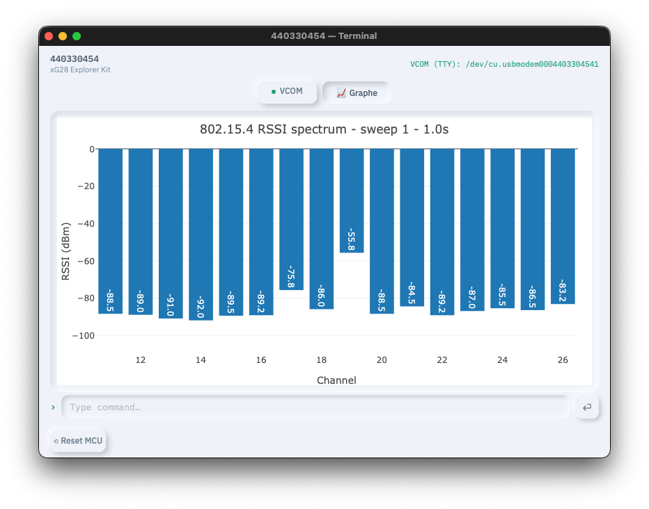
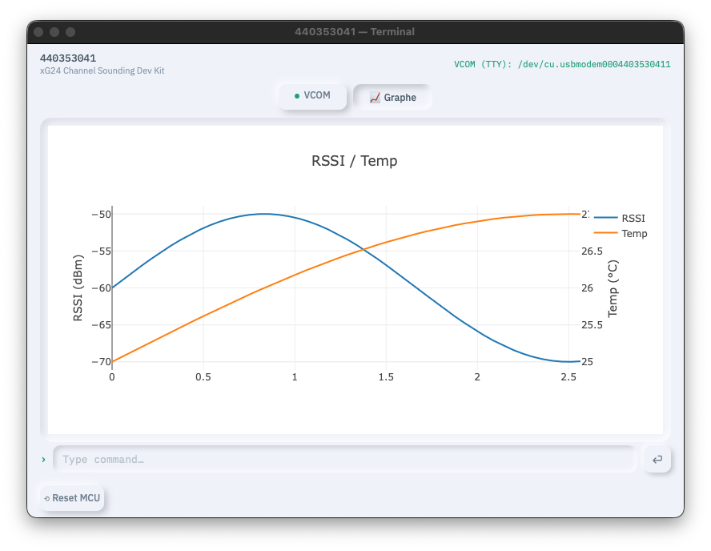

My Lab
Maintain lab boards, organize demo setups, control boards manually, and automate tests with scenarios.
1 — Install
My Lab is installed through the platform launcher. The launcher creates or updates the local runtime environment, installs the Python dependencies, and prepares the application for use. There is no separate manual Python installation flow to follow in this guide.
Installation command
| Platform | Command | Purpose |
|---|---|---|
| macOS / Linux | ./mylab.sh --install | Install or update the local application environment. |
| Windows | mylab.bat --install | Install or update the local application environment. |
chmod +x mylab.sh once if the shell script is not executable.Configuration
config.ini only contains application settings. It does not need a paths section. Board discovery and board access are handled by pycommander and the application runtime.
[server] host = 127.0.0.1 web_port = 8080
| Setting | Description |
|---|---|
| host | Local host used by the web application. |
| web_port | Local Flask port used by the embedded application window. |
Launch commands
| Action | macOS / Linux | Windows |
|---|---|---|
| Launch the application | ./mylab.sh | mylab.bat |
| Launch with traces | ./mylab.sh --traces | mylab.bat --traces |
| Clean generated logs and groups | ./mylab.sh --clean | mylab.bat --clean |
Use traces when debugging adapter detection, VCOM traffic, script execution, or plot updates. The clean command removes generated working data and should be used only when you intentionally want to reset local lab state.
2 — Application Overview
My Lab is a desktop application for daily lab work with Silicon Labs boards. It is built around three needs: keep boards usable, organize boards into repeatable demo or test groups, and automate operations that are too repetitive or too timing-sensitive to run by hand.
The application is based on pycommander for adapter discovery, board reset, VCOM resolution, and board access. The UI is intentionally organized around lab workflows rather than low-level tools.
Maintenance keeps the lab fleet in a known good state: find available boards, select the boards to work on, erase or recover boards, upgrade adapters, and save useful sets as groups.
Manual Control gives direct access to one or more boards: open a terminal, erase flash, reset a board, send CLI commands manually, or run a small script against a selected board.
Scenario Control automates a complete test, demo, or measurement flow: select boards, assign per-board scripts, add a global script, run everything, synchronize steps, and collect outputs or graphs.
Maintenance
The Maintenance page is the starting point when preparing a lab bench. It lists the detected adapters and lets you build a selected set of boards for bulk operations.

Typical maintenance workflow
- Refresh the available board list.
- Select the boards you want to prepare.
- Run the needed maintenance action: erase, recover, or adapter upgrade.
- Save the selection as a group when the same set will be reused for a demo, test bench, or measurement setup.
Groups
A group is a named set of boards. Groups are useful when the same physical setup is reused frequently: one group for a demo kit, one for a measurement bench, one for a regression setup, or one per developer desk.
- Save Group stores the current selected boards.
- Load Group restores the same board set later.
- Delete Group removes a group that is no longer needed.
Groups are also used by Manual Control and Scenario Control to filter boards or quickly create scenario board entries.
Manual Control
Manual Control is used when you want to interact with boards directly. It is designed for quick experiments, board bring-up, manual erase/reset operations, and ad-hoc CLI checks before creating a repeatable scenario.

Selector
- All available — show all adapters
- Only my desk — source filter showing USB-only adapters
- Group name — show only adapters in that group
Adapter card Buttons
- Erase — Erase the chip
- Flash — Flash the selected s37 to the target (via pycommander)
- Cli — opens a terminal window (VCOM)
- Reset — MCU reset of the board target (via pycommander)
- Only my desk — source filter showing USB-only adapters
Terminal view
The terminal window shows the VCOM console for CLI commands. A Reset MCU button is available at the bottom of the terminal. You can also call a script from this window.

Manual Control is intentionally individual. Use it to validate one board or a small subset. Once the sequence is stable, move it into Scenario Control so it can be repeated reliably.
Scenario Control
Scenario Control is the automation layer. A scenario describes which boards are involved, which script runs on each board, and optionally which global script orchestrates the full flow.

Scenarios are useful for:
- automated demos that need several boards to start in a controlled order;
- test flows that reset boards, configure CLIs, transmit traffic, and check results;
- measurements that collect values over time and display live graphs;
- repeatable maintenance operations that go beyond a simple erase or reset.
Create a Scenario
A scenario can be created from the UI or directly as files in the scenari/ directory. The usual flow is:
- Create a new scenario folder.
- Add or import boards. The From group action is the fastest way to start from a saved board group.
- Assign a nickname to each board when the script needs stable names such as
tx,rx,dut, orsniffer. - Attach an individual board script to each board that needs local actions.
- Add a global script when the flow needs orchestration across boards.
- Run the scenario and inspect the run panel, terminal output, logs, and graphs.
Scenario file
A scenario is described by a YAML file. It may contain a global script and a list of boards. Each board entry can reference its own individual script.
script: global_script.py
boards:
- nickname: tx
board: BRD4187C
connection: '440012345'
script: tx_board.py
open_terminal: true
- nickname: rx
board: BRD4187C
connection: '440067890'
script: rx_board.py
open_terminal: true| Field | Meaning |
|---|---|
| script | Global script for the scenario. Optional. |
| boards | List of board entries in run order. |
| nickname | Stable name used by scripts, for example scenario.board("tx"). |
| board | Board type or board label used for user readability. |
| connection | Adapter serial number or connection identifier (jlink serial number). |
| script | Individual script to run for this board. Optional. |
| mass_erase | When true, erase the chip before flashing. |
| halt_reset | When true, maintain reset line after flash to give release control to the script(s). |
| open_terminal | When true, opens a terminal window during the run. |
3 — Scripting
Global Script
A global script coordinates the scenario. It must define script(scenario). Use it when several boards must be reset together, configured in a specific order, synchronized at checkpoints, or queried as a group.
Available global commands
| Command | Description |
|---|---|
| scenario.boards | Returns the list of board objects in YAML order. |
| scenario.board(id) | Gets one board by index, serial number, or nickname. |
| scenario.release_reset() | Resets all boards in parallel. |
| scenario.run_board_scripts(wait=True) | Runs all configured individual board scripts. With wait=True, the global script blocks until they finish. |
| scenario.wait_board_scripts() | Waits for individual board scripts launched with wait=False. |
| scenario.wait_checkpoint(name, serials=None, timeout=30.0) | Waits until all expected boards, or a selected subset, reached a named checkpoint. |
| scenario.cli_all(cmd, timeout=10.0) | Sends the same CLI command to all boards in parallel and returns a dictionary of responses. |
| scenario.delay(seconds) | Waits for a number of seconds. |
| scenario.print(msg) | Prints a message in the run output panel. |
Individual Board Script
An individual script runs for one board and must define script(board). When a scenario launches several board scripts, they run in parallel: one thread per board.
Available board commands
| Command | Description |
|---|---|
| board.config_vcom(line_ending="CRLF", echo=True, prompt=">") | Configures CLI line ending, echo behavior, and prompt detection. |
| board.wait_vcom_ready(timeout=5.0, settle=0.2) | Waits until the VCOM channel is open and quiet enough to receive commands. |
| board.cli(cmd, timeout=10.0) | Sends a CLI command and returns the cleaned response. |
| board.read(timeout=1.0, pattern=None) | Reads spontaneous VCOM output without sending a command. Optionally stops when a regex pattern appears. |
| board.write_cli(data) | Writes raw CLI data to the VCOM channel. |
| board.read_cli(timeout=2.0) | Reads raw VCOM data with a timeout. |
| board.reset(settle=1.0) | Resets the target MCU and waits for the settle time. |
| board.flash(firmware_path, serial=None, ip=None, masserase=True, halt_reset=False) | Flashes firmware. By default, mass erase is performed first. |
| board.delay(seconds) | Waits for a number of seconds. |
| board.sync(idle=0.3, timeout=3.0) | Waits until the VCOM output has been quiet for the requested idle time. |
| board.checkpoint(name) | Signals a named milestone to the global script. This call does not block the board script. |
| board.show_terminal(view="cli") | Opens or focuses the board terminal. Use view="graph" to show the plot pane. |
| board.print(msg) | Prints a message in the run output panel. |
| board.plot.show(fig) | Displays a full Plotly figure specification or a Plotly figure object. |
| board.plot.extend(ys, x=None, traces=None, maxpoints=None) | Appends live data points to an existing graph. |
| board.plot.clear() | Clears the graph pane. |
| board.serial | Read-only board serial number. |
| board.nickname | Read-only scenario nickname. |
Synchronization Methods
Scripts can be synchronized in several ways depending on how strict the timing needs to be.
| Method | Use when | Behavior |
|---|---|---|
| Sequential global code | Only one global operation should happen at a time. | Commands run in the order written in script(scenario). |
| scenario.release_reset() | All boards must reset together. | Resets all boards in parallel. |
| scenario.run_board_scripts(wait=True) | The global script must wait until all board scripts are complete. | Blocking call. |
| scenario.run_board_scripts(wait=False) | Board scripts should continue while the global script performs orchestration. | Non-blocking call; use wait_board_scripts() later. |
| board.checkpoint(name) + scenario.wait_checkpoint(name) | The global script must wait until boards reach a named point such as booted, ready, or measured. | Board scripts signal progress; the global script waits for all boards or a subset. |
| board.sync() | A board script must avoid racing the last CLI response or boot output. | Waits until VCOM is quiet for a short idle period. |
| board.wait_vcom_ready() | The first command after connection or reset may otherwise be sent too early. | Waits for the VCOM transport and a quiet settle window. |

Plots & Graphs
Every board has a graph pane in its terminal window. Scripts can push Plotly figure specifications directly from Python. This supports live measurements, dashboards, quick visual checks, and demo visuals without adding UI code to the application.
Graph workflow
- Open the terminal graph pane with
board.show_terminal("graph"). - Create an initial figure with
board.plot.show({...}). - Append live data with
board.plot.extend(...), or redraw the full figure with anothershow(). - Use
board.plot.clear()before starting a new visualization.
| Plot command | Description |
|---|---|
| board.plot.show(fig) | Renders a complete Plotly figure. fig can be a plain dictionary or an object with to_json(). |
| board.plot.extend(ys, x=None, traces=None, maxpoints=None) | Appends values to one or more traces. Use maxpoints to keep a rolling window. |
| board.plot.clear() | Clears the plot area. |


Annex — Basic Script Examples
Minimal board script
# board_basic.py
def script(board):
board.config_vcom(line_ending="CRLF", echo=True, prompt=">")
board.wait_vcom_ready()
board.print("Board script started")
response = board.cli("version")
board.print(response)
Erase and flash firmware
# flash_board.py
def script(board):
board.print("Flashing application")
ok = board.flash("firmware/app.hex", masserase=True)
if ok:
board.reset(settle=1.5)
board.print("Flash complete")
else:
board.print("Flash failed")
Global script: run board scripts, then query all boards
# global_script.py
def script(scenario):
scenario.print("Resetting boards")
scenario.release_reset()
scenario.print("Running board scripts")
scenario.run_board_scripts(wait=True)
scenario.print("Collecting versions")
results = scenario.cli_all("version")
for name, response in results.items():
scenario.print(f"{name}: {response}")
Checkpoint example
# tx_board.py or rx_board.py
def script(board):
board.reset(settle=1.0)
board.wait_vcom_ready()
board.cli("init")
board.checkpoint("ready")
board.cli("run")
# global_script.py
def script(scenario):
scenario.run_board_scripts(wait=False)
if scenario.wait_checkpoint("ready", timeout=20):
scenario.print("All boards are ready")
scenario.cli_all("start")
scenario.wait_board_scripts()
Subset checkpoint
def script(scenario):
scenario.run_board_scripts(wait=False)
scenario.wait_checkpoint("rx_ready", serials=["rx"], timeout=15)
scenario.board("tx").cli("tx 100")
scenario.wait_board_scripts()
Annex — Graph Examples
Simple live line graph
# graph_line.py
import math
import time
def script(board):
board.show_terminal("graph")
board.plot.show({
"data": [{"type": "scatter", "mode": "lines", "name": "signal", "x": [], "y": []}],
"layout": {"title": {"text": "Live signal"},
"xaxis": {"title": {"text": "t (s)"}},
"yaxis": {"title": {"text": "value"}}}
})
t0 = time.time()
while time.time() - t0 < 10:
t = time.time() - t0
y = math.sin(2 * math.pi * 0.5 * t)
board.plot.extend([y], x=round(t, 3), traces=[0], maxpoints=200)
time.sleep(0.05)
Bar graph from CLI results
# graph_channels.py
def script(board):
board.show_terminal("graph")
channels = [11, 12, 13, 14, 15]
counts = []
for ch in channels:
board.cli(f"setchannel {ch}")
response = board.cli("measure")
# Replace this parsing with the format returned by your firmware.
counts.append(int(response.strip() or "0"))
board.plot.show({
"data": [{"type": "bar", "x": [f"ch{c}" for c in channels], "y": counts}],
"layout": {"title": {"text": "Measurement by channel"}}
})
Two live traces
# graph_two_traces.py
import time
def script(board):
board.show_terminal("graph")
board.plot.show({
"data": [
{"type": "scatter", "mode": "lines", "name": "RSSI", "x": [], "y": []},
{"type": "scatter", "mode": "lines", "name": "Temperature", "x": [], "y": []}
],
"layout": {"title": {"text": "Live measurement"}}
})
t0 = time.time()
while time.time() - t0 < 30:
t = round(time.time() - t0, 2)
rssi = float(board.cli("get_rssi").strip() or "0")
temp = float(board.cli("get_temp").strip() or "0")
board.plot.extend([rssi, temp], x=t, traces=[0, 1], maxpoints=300)
time.sleep(1)